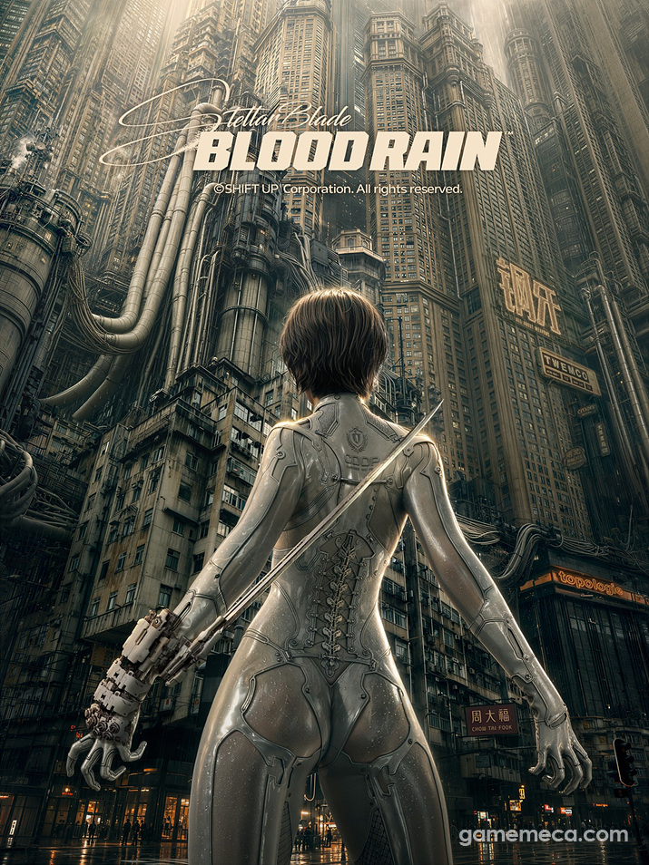
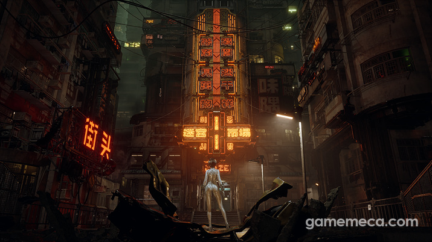
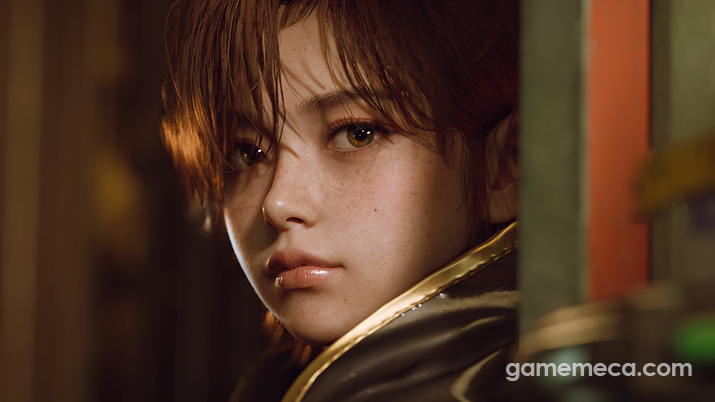
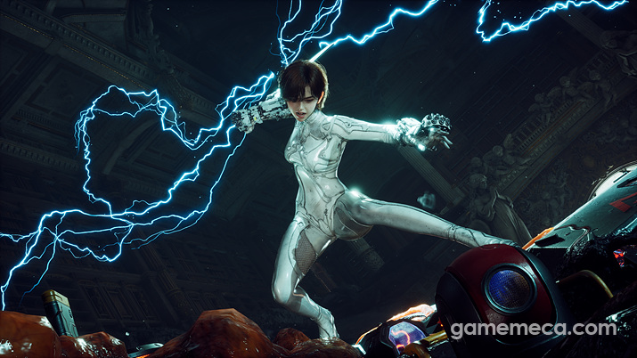
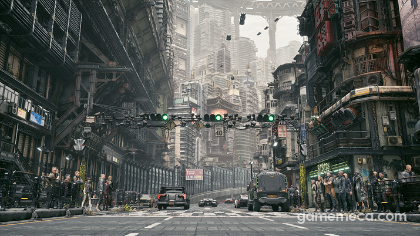

스텔라블레이드 후속작 '블러드레인' SGF2026 공개, 새 주인공 이비는 누구?
서머게임페스트 2026, 그러니까 SGF 2026이 이제 막 지나갔는데요. 그 행사에서 나온 소식 중에 저를 제일 붙잡은 게 하나 있어서 오늘은 이 이야기부터 풀어볼까 합니다. 시프트업이 '스텔라 블레이드'의 정식 후속작 '스텔라 블레이드: 블러드 레인'을 현지시간 6월 5일(한국시간 6일)에 최초로 공개했거든요. 전작을 재밌게 했던 분이라면 이미 트레일러 챙겨보셨을 수도 있는데, 아직 못 보신 분들을 위해 지금까지 나온 확실한 정보만 담백하게 정리해 드릴게요.

이게 이번에 공개된 공식 키비주얼인데요, 등에 검을 메고 도심을 올려다보는 뒷모습부터 분위기가 남다르네요.
이미지 출처: 게임메카 · 네이버 본문엔 받아서 재업로드 권장
'블러드 레인'이 정확히 뭔가요?
제목만 보면 완전 다른 신작 같지만, 전작 '스텔라 블레이드'의 사건 이후를 그대로 이어가는 직접적인 후속작이에요. 스핀오프나 외전이 아니라 본편 넘버링을 잇는 작품이라고 보시면 되는데요, 개발·퍼블리싱 모두 시프트업이 직접 담당한다는 점도 눈에 띕니다. 전작은 소니가 퍼블리싱을 맡았는데, 이번엔 시프트업이 완전히 독립해서 자체 퍼블리싱으로 간다고 해요. PC 버전 판매가 워낙 좋았던 영향도 있는 듯합니다.
공개된 트레일러는 3분 30초 분량인데, 실제 인게임 플레이 영상으로 구성됐다는 점이 특징이에요. CG로 분위기만 보여준 게 아니라 진짜 게임 화면을 그대로 보여준 거라 더 믿음이 가더라고요.

트레일러 속 배경인데요, 홍콩 느낌 나는 네온 간판 뒷골목이 블레이드 러너 같은 분위기를 확 살려주네요.
이미지 출처: 게임메카 · 네이버 본문엔 받아서 재업로드 권장
새 주인공 '이비'는 누구예요?
전작 주인공은 '이브(EVE)'였는데, 이번 작품의 주인공은 '이비(Evie)'라는 새 캐릭터예요. 이름이 비슷해서 헷갈리기 쉬운데 엄연히 다른 인물이라 짚고 넘어갈게요. 코드네임은 '엔젤'이라고 하고요, 짧은 머리에 강하 요원을 연상케 하는 슈트를 입은 여전사 느낌의 캐릭터로 나옵니다.
무기부터가 확 바뀌었어요. 이브가 검을 주로 쓰던 것과 달리, 이비는 미래형 건틀릿으로 상대를 두들기는 근접 격투가 메인이네요. 주먹·발차기에 카운터를 얹은 콤보가 기본기고, 팔에 검을 붙여서 베기 공격을 끼워 넣는 것도 가능하답니다. 회피기는 전작 팬들에게 익숙한 '블링크'를 그대로 물려받았고요.

이비 얼굴이 이렇게 클로즈업으로 잡히는데, 전작 이브랑은 확실히 다른 인상이에요.
이미지 출처: 게임메카 · 네이버 본문엔 받아서 재업로드 권장
'블러드 레인'이라는 부제, 어떤 의미일까요?
제목에 대한 공식 설명은 아직 없지만, 트레일러만 봐도 왜 이런 이름이 붙었는지 짐작이 가더라고요. 전작 부제가 따로 없이 담백하게 '스텔라 블레이드'였던 것과 달리, 이번엔 '피의 비'라는 꽤 강렬한 수식어가 붙었죠. 트레일러 전반에 붉은 색감과 핏빛 이펙트가 자주 비치는 걸 보면, 전작보다 한층 어둡고 격렬해진 톤을 예고하는 이름이 아닐까 싶습니다. 이비의 전투 스타일 자체가 근접 격투로 바뀐 만큼, 화면을 채우는 액션의 색깔도 자연스레 더 거칠어질 것 같고요.

전투신 컷인데 번개 이펙트가 꽤 화려하게 들어갔더라고요. 건틀릿 액션이 이런 느낌인가 봐요.
이미지 출처: 게임메카 · 네이버 본문엔 받아서 재업로드 권장
스토리는 어떤 내용이에요?
공식으로 풀린 정보가 아직 많지는 않은데요, 새로운 주인공의 모험을 그리며 정체가 아직 명확치 않은 '스칼렛 신'을 조사하는 과정과 그걸 둘러싼 세력의 움직임이 전개되는 이야기라고 해요. 물질인지 특정 인물·조직을 가리키는 명칭인지조차 아직 공식적으로 밝혀지지 않았답니다. 전작에서 봤던 삭막한 미래 도시 감성은 유지하면서 더 큰 스케일로 확장한 느낌이네요. 다만 이 정도가 지금까지 공식적으로 확인된 선이고, 세부 캐릭터 설정이나 자세한 줄거리는 🔍 공식 미공개 아직 베일에 싸여 있는 상태예요. 개발도 아직 초기 단계라고 하니 앞으로 정보가 하나씩 풀리지 않을까 싶습니다.
플랫폼이랑 출시일은 언제인가요?
이 부분은 지금 시점에서 전부 미정이에요. 공개된 트레일러 영상이 PC 버전으로 촬영된 것으로 확인되면서 PC 플랫폼은 어느 정도 예상되는 분위기지만, PS5나 엑스박스까지 포함한 정확한 멀티 플랫폼 여부와 출시일은 "추후 공개"라는 말 외엔 나온 게 없죠. 시프트업이 이번엔 직접 퍼블리싱을 맡으면서 콘솔 독점 구조에서 벗어날 수 있다는 추측이 나오고 있긴 한데, 이건 어디까지나 업계 추정일 뿐 공식 확정은 아니에요.
SGF 2026 다른 발표작과 비교하면
이번 SGF 2026은 대형 후속작 공개가 유독 많았던 행사였어요. 파이널판타지7 리메이크 시리즈 후속작 소식도 같이 들려왔고, 서구권 대형 스튜디오들 신작도 줄줄이 트레일러를 풀었죠. 그 틈에서 '블러드 레인'이 눈에 띈 건, 다른 발표들이 CG 위주 티저에 그친 반면 실제 인게임 플레이 영상을 3분 30초나 통째로 공개했다는 점 때문이었어요. 아직 초기 단계 작품이 이 정도 완성도를 보여준다는 건, 그만큼 개발이 상당히 진행돼 있다는 뜻으로 읽히네요.
| 항목 | 현재 확인된 내용 |
|---|---|
| 공개 행사 | 서머게임페스트 2026(SGF 2026), 한국시간 6월 6일(현지시간 6월 5일) |
| 정식 명칭 | 스텔라 블레이드: 블러드 레인 (Stellar Blade: Blood Rain) |
| 개발·퍼블리싱 | 시프트업 자체 진행(전작은 소니 퍼블리싱) |
| 새 주인공 | 이비(코드네임 엔젤), 건틀릿 근접 격투 + 블링크 회피 |
| 플랫폼 | 미정 (트레일러는 PC 버전으로 촬영 확인) |
| 출시일 | 미정 · 추후 공개 예정 |

공개된 도시 배경 컷 하나 더 가져와봤는데요, 전작보다 훨씬 넓어진 스케일이 느껴져요.
이미지 출처: 게임메카 · 네이버 본문엔 받아서 재업로드 권장
전작 팬 입장에서 든 생각
저도 '스텔라 블레이드' 본편을 재밌게 했던 사람이라, 이번 트레일러 보고 반가운 마음이 컸어요. 특히 CG가 아니라 인게임 플레이 영상으로 첫 공개를 했다는 게 자신감이 느껴지더라고요. 전작이 검 액션으로 손맛을 잘 잡았던 게임이었는데, 이번엔 주인공이 아예 무기 스타일을 바꿔서 건틀릿 격투로 간다는 게 조금 의외이면서도 궁금증이 생기는 지점이었죠.
다만 아직 출시일도 플랫폼도 정해진 게 없다 보니, 지금은 딱 '이런 방향으로 준비하고 있다' 정도로만 받아들이고 기대치를 너무 높이 잡진 않으려고 해요. 개발 초기 단계라고 하니 시간도 좀 걸릴 것 같습니다.
블러드 레인 정리
한마디로, 스텔라 블레이드: 블러드 레인은 SGF 2026에서 처음 공개된 정식 후속작이고, 새 주인공 이비가 건틀릿 격투로 전작과는 다른 액션을 보여준다는 것까지가 지금까지 확인된 사실이에요. 플랫폼·출시일은 전부 미정이니 섣부른 소문에는 너무 휘둘리지 않으시는 게 좋을 것 같습니다. 세부 정보가 더 풀리면 그때 다시 정리해서 들고 올게요.
✔ SGF 2026 같이 보기 좋은 내용
· 봄딩 게임 블로그의 SGF 2026 신작 총정리 글(스텔라 블레이드: 블러드 레인 포함 발표작 8종 큐레이션 — 발행 시 링크 연결)